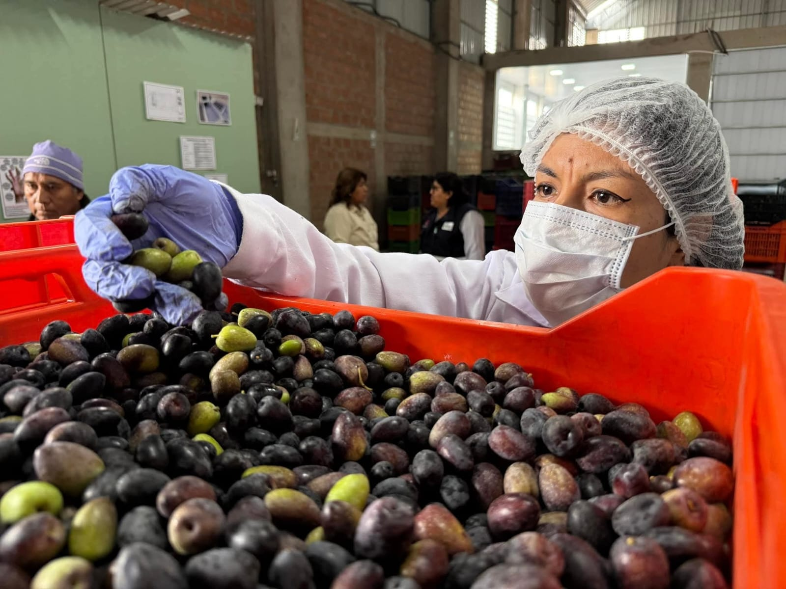
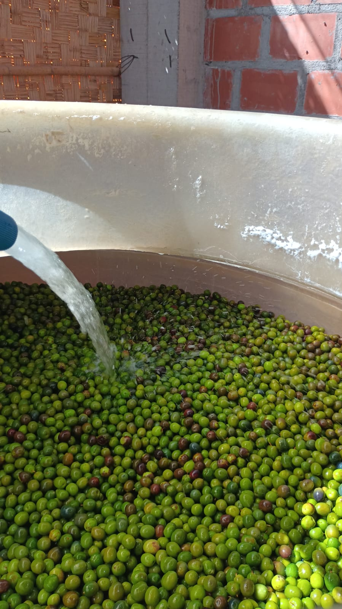
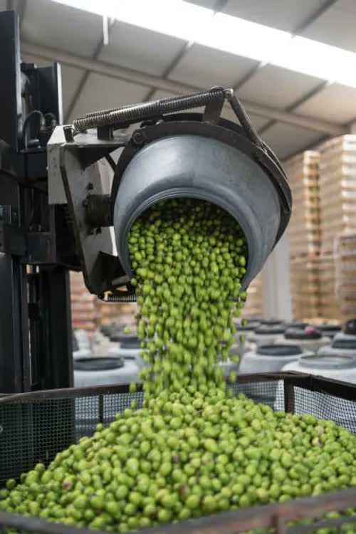

Des olives d'exception, conditionnées pour l'international

Nos olives noires sont récoltées à pleine maturité dans la vallée de Tacna. Leur chair ferme et leur goût fruité en font un produit idéal pour la transformation (tapénades, conserves) ou la consommation directe.
| Variétés | Sevillana, Criolla, Azapa |
| Calibres | 180/200, 200/220, 220/240 (pièces/kg) |
| Maturité | Noire 100% |
| Conditionnement | Saumure 8-10%, conservateurs naturels |

Récoltées avant complète maturité, ces olives vertes offrent une texture croquante et une saveur légèrement amandée. Idéales pour l'apéritif, la farce ou l'export haut de gamme.
| Variétés | Sevillana, Gordal |
| Calibres | 160/180, 180/200, 200/220 |
| Dénoyauteur | Sur demande (farces possibles) |
| Conditionnement | Saumure, eau + sel. |

Pour les transformateurs et importateurs, nous proposons des lots en vrac de différentes tailles, avec une traçabilité complète. Nous adaptons le conditionnement à vos besoins : barils, caisses plastique, sacs sous vide, big bags.
| Barils alimentaires | 200L avec double sachet |
| Caisses plastique | 10kg, 20kg, empilables |
| Big bags | 500kg à 1000kg (olives sèches) |
| Palettisation | Palettes EUR ou standard |